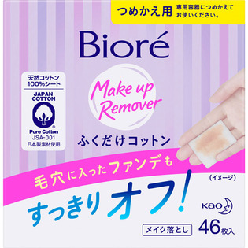

返回列表
产品名称：ビオレ メイク落としふくだけコットン つめかえ用

花王 ビオレ メイク落としふくだけコットン つめかえ用 詰替 ４６枚
メーカー 花王
JANコード 4901301729286
商品の特徴
化粧水成分配合
天然コットン
厚手のシートで毛穴の奥のファンデまですっきりキャッチ！
オイルフリー
成分・分量
水、ラウリン酸PEG-12、BG、エタノール、クエン酸、安息香酸Na、香料
用法及び用量
・容器全体に指をかけ、底ブタをはずします。
・袋を取り出し、袋上部のシールをはがし取ります。
・シートは袋から出さず、底ブタと袋の正面が手前になるようにして、袋を底ブタにのせます。
・容器の上ブタが手前になるようにしてかぶせ、きちんと閉めます。